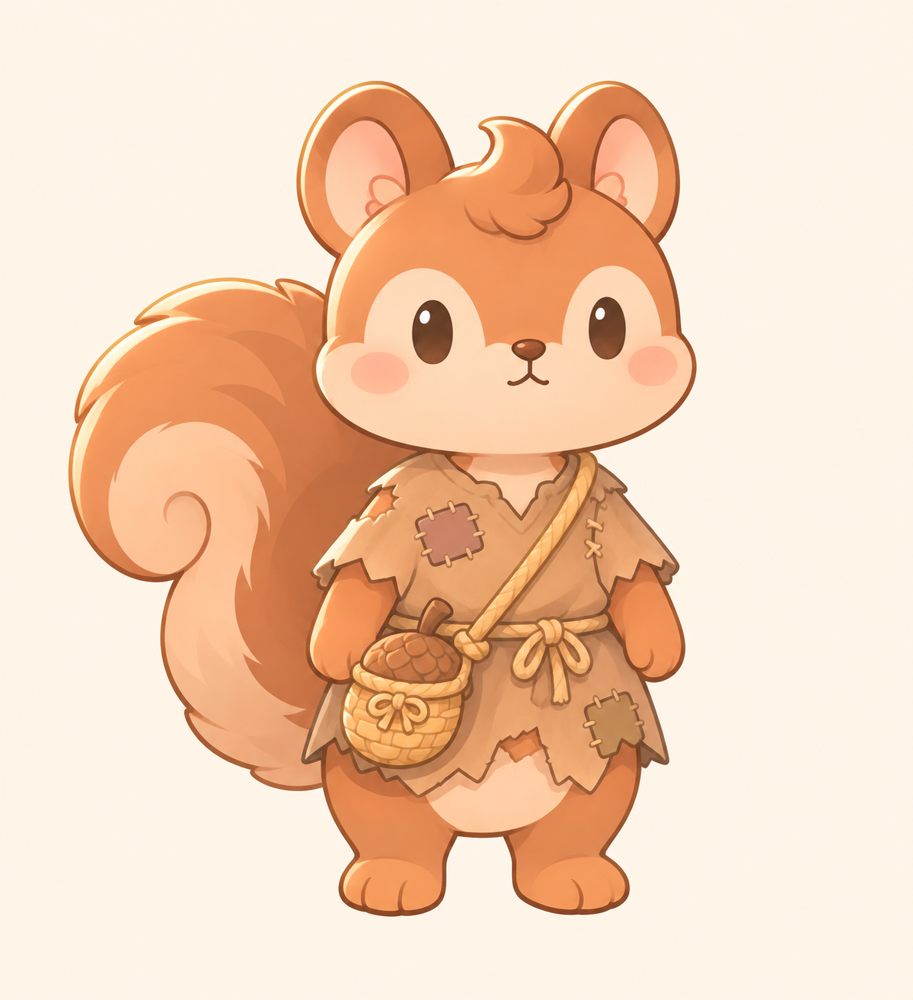
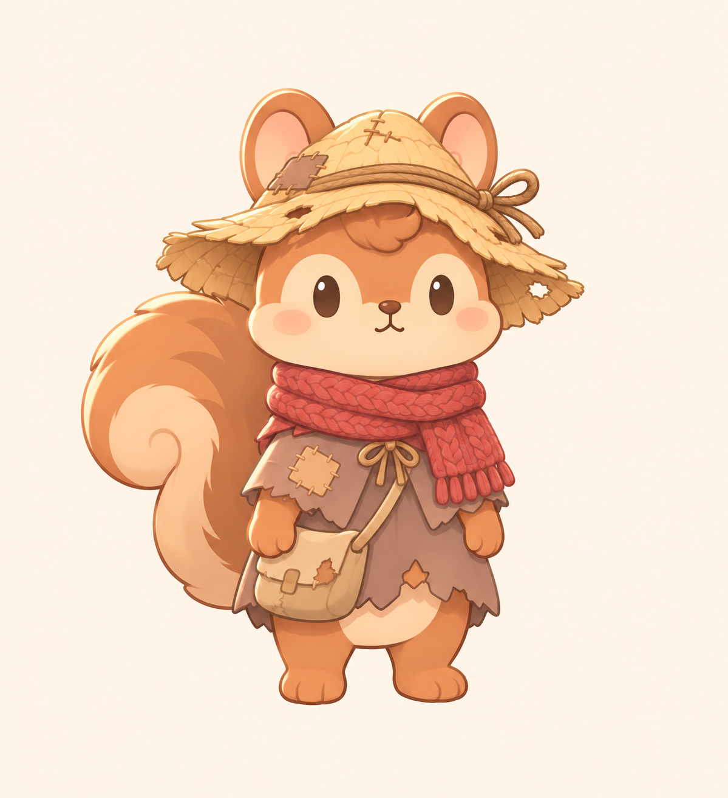
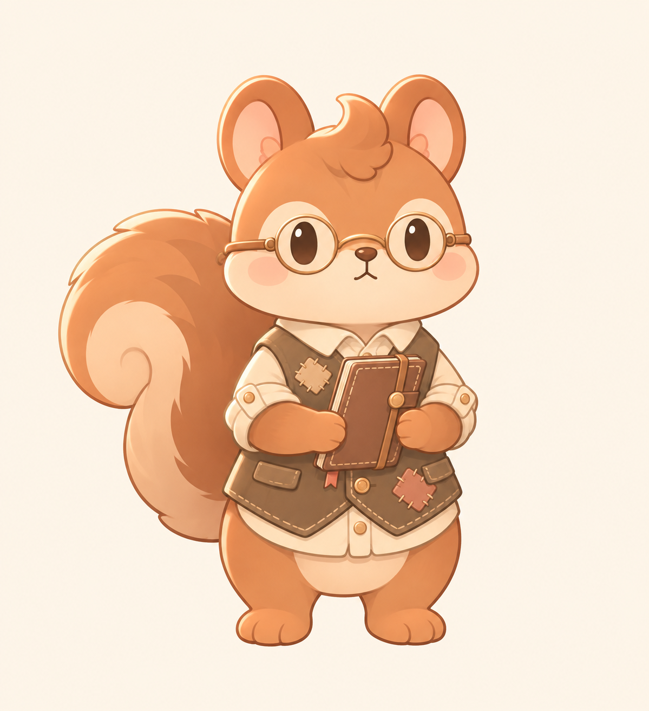
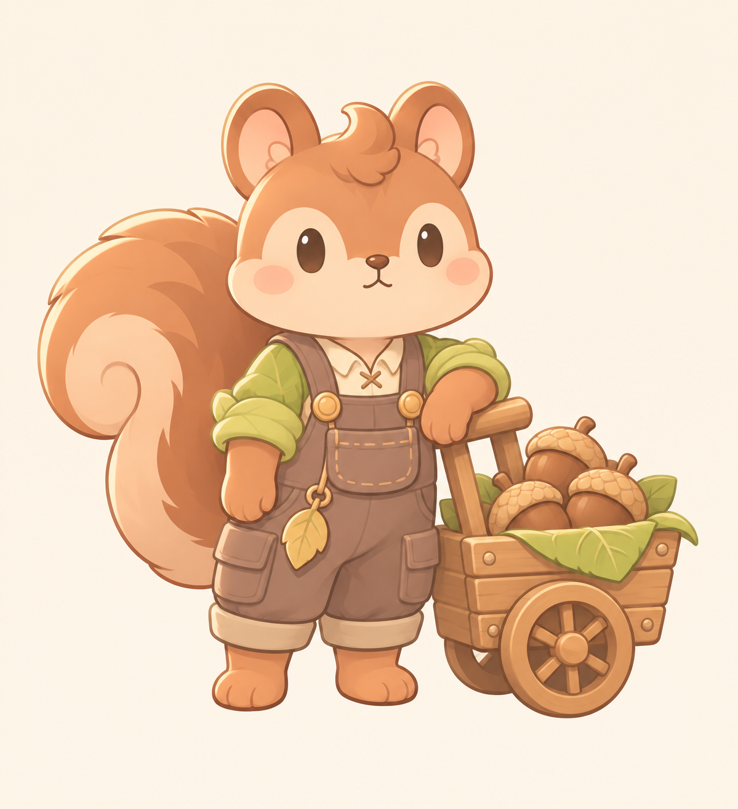
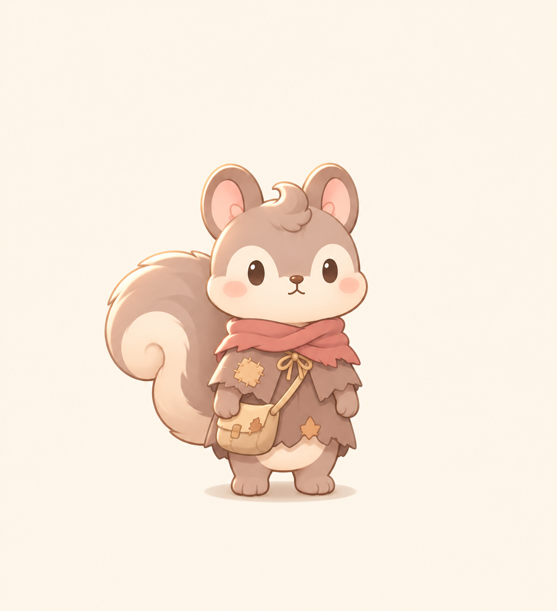
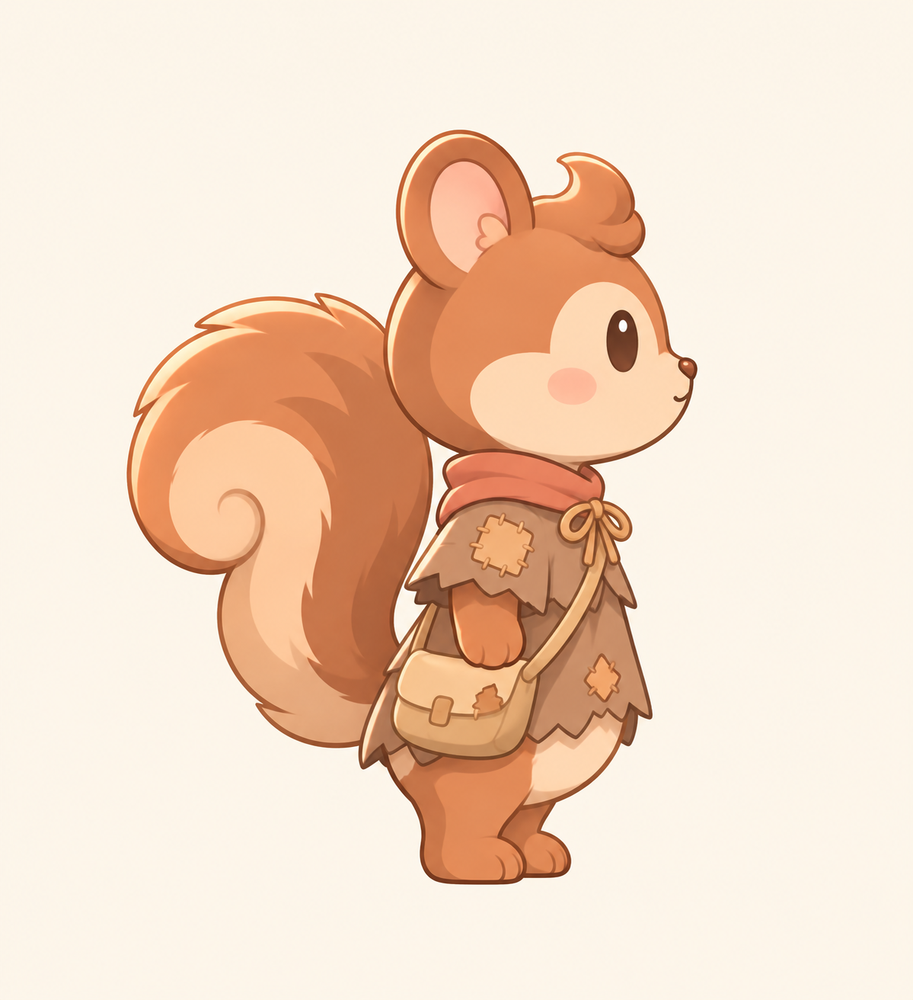

주인공 다람쥐 시안 6종
스타일 D(파스텔 소프트 셀)로 뽑은 디자인 변형입니다. 종은 같고 옷과 소품, 자세만 바꿨습니다.

기본형에 어깨 주머니 추가

빨간 목도리로 포인트, 캐주얼한 인상

계산하는 금융 피해자 느낌

노동 클릭과 짐수레 연결

색을 빼서 더 귀엽고 차분한 인상

오른쪽을 보는 옆모습, 걷기·점프 연출용
고르실 때 볼 점: 기준 그림(D)과 얼마나 같은 캐릭터로 읽히는지, 화면에서 작을 때도 누구인지 알아보는지, 옷과 소품이 화면 정보를 가리지 않는지.
하나 고르면 그 디자인을 주인공 기준으로 정하고 표정 5종을 그 디자인으로 다시 뽑습니다. 여러 개를 섞어도 됩니다.